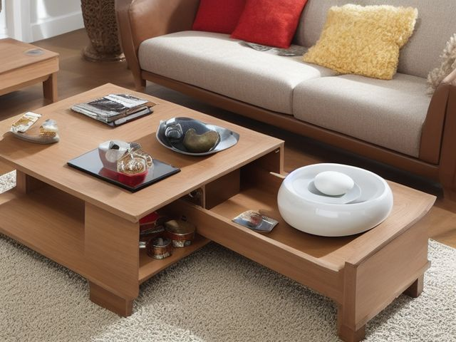

Living Room micro zone
The Coffee Table
The coffee table, in the Living Room. A small shared surface for whatever is happening right now, and nothing that is not. One tray holding four coasters and the remote in use, plus at most one book or one plant beside it. No mugs, no charging cables, no post, and the wood or glass showing across most of the top.
One session: 15-30 min, quick, with most of it spent deciding what leaves rather than cleaning.
The short version
- Sort. Clear the whole top onto the floor
- Straighten. The tray sets the table's entire standing inventory
- Shine. Lift the tray and wipe the whole top including the ring marks
- Safety. A glass top or a hard square corner sits at exactly the height
- Standardize. Photograph the finished tray and tape the print inside the media cabinet door
- Sustain. Whoever carries the last mug to the kitchen takes everything else
Each step in full, with what to have on hand and what done looks like, below.
Where it is
Living Room
6 micro zones, one session each
- 1The Sofa and Seating
- 2The Coffee Table
- 3The Media Center
- 4The Bookshelves and Display
- 5The Side Tables and Lighting
- 6The Floor and Circulation Path
What done looks like
A small shared surface for whatever is happening right now, and nothing that is not.
- One tray holding four coasters and the remote in use, plus at most one book or one plant beside it
- No mugs, no charging cables, no post, and the wood or glass showing across most of the top
What done looks like
One tray holding four coasters and the remote in use, plus at most one book or one plant beside it. No mugs, no charging cables, no post, and the wood or glass showing across most of the top.

Common items here
- Four coasters
- The remote in use
- One book, mid-read
- One plant
Check these before you start
- Fall, cut, or crushGlass tops and hard square corners sit at head height for a child who is learning to walk, and the edge of a coffee table is where those falls land.
- Burn or fireA candle on this table is surrounded by throws, magazines and paper, and it is the surface most often left burning when everyone goes to bed.
Which of these is true here?
Match what you are actually seeing in the coffee table to why it keeps happening, then start at the pass that fixes that, not the top of the list.
There are coasters sitting untouched in the far corner of this table while everyone still sets a mug straight on the wood
- The coasters aren't actually within reach of the seats people use, so grabbing one means leaning across the table. Confirm in 30 seconds: Fetch it once and count the movements. More than two and the storage is charging you rent every time. If that checks out, start at Straighten.
- Nobody's agreed that reaching for a coaster is actually required before a mug goes down. Confirm in 30 seconds: Ask two people in the house to describe this zone when it is finished. Two different answers means there is no standard to keep. If that checks out, start at Standardize.
- Skipping the coaster has never actually cost anything yet, so there's no moment that makes anyone stop and grab one. Confirm in 30 seconds: Name the moment it happens. If the answer is "when I get round to it", there is no trigger and it will not survive a bad week. If that checks out, start at Sustain.
There are three magazines and a stack of old takeaway menus on this table, sitting under the one book somebody's actually still reading
- Old menus and magazines don't obviously look like rubbish once they've sat there a while, so nobody flags them. Confirm in 30 seconds: Ask someone who does not live here to name what looks out of place. If they see it instantly and you had stopped noticing, this is the cause. If that checks out, start at Sort.
- Deciding whether to keep or recycle each one is its own small decision that keeps getting put off. Confirm in 30 seconds: Pick up one piece. If your first thought is a verb (pay, sign, call, decide) rather than a place, it needs a decision, not a home. If that checks out, start at Sort.
- Nobody's specifically assigned to clear this table, so paper just accumulates until somebody's bothered enough. Confirm in 30 seconds: Ask who resets this zone. If the honest answer is "whoever gets to it" or two names with no agreement, there is no owner. If that checks out, start at Sustain.
A candle sits lit on this table surrounded by throws and a stack of magazines, close enough that nobody's actually thought about what's next to it
- There's no rule about keeping paper and fabric clear of the candle, so it just goes wherever looks nice that evening. Confirm in 30 seconds: Look for the four: a blade your hand would meet, weight above shoulder height, heat beside something that burns, and an unsafe placement near a child's reach. If that checks out, start at Safety.
- The pile of magazines built up around the candle gradually, so the closeness crept up without anyone noticing. Confirm in 30 seconds: Ask someone who does not live here to name what looks out of place. If they see it instantly and you had stopped noticing, this is the cause. If that checks out, start at Sort.
- Lighting the candle happens right before people sit down, in a rush, so clearing the space around it gets skipped. Confirm in 30 seconds: Name the moment it happens. If the answer is "when I get round to it", there is no trigger and it will not survive a bad week. If that checks out, start at Sustain.
Only have 15 minutes? Clear the whole top onto the floor and put back only what somebody used in the last two days. The candle burned down to the foil, the coasters nobody uses because they sit on the far corner, the three-month-old magazines and the takeaway menus all go now. Victory: The table holds four coasters, the remote in use, and at most one book or plant, nothing else.
The six passes, in order
Work them in this order. Sorting after you have arranged things means arranging things you were about to remove.
This zone's full kit list is below, after the method. Skim it first if you would rather gather everything before you start.
Sort
Decide what stays. Everything else leaves the zone now.
Clear the whole top onto the floor and put back only what somebody used in the last two days. The candle burned down to the foil, the coasters nobody uses because they sit on the far corner, the three-month-old magazines and the takeaway menus all go now.
What to store it in, now that you know what you are keeping
Bins and shelves are for what Sort left behind, not a stand-in for it. Buying storage before sorting means buying a container for things you have not yet decided to keep.
Only if it applies to the coffee table: 8 more
Not every home needs these for the coffee table. Each one is here because some do, and the reason is next to it.
- Magazine File ×4 Contain manuals, papers, slim books, or activity books, in the Straighten, Standardize and Sustain passes. Do not overload; anchor wall-mounted or tall systems where required.
- Open Front Bin Small ×4 Provide one-motion access to frequently used items, in the Straighten, Standardize and Sustain passes. Do not overload; anchor wall-mounted or tall systems where required.
- Shelf Riser ×2 Use vertical space and reveal back-row items, in the Straighten, Standardize and Sustain passes. Do not overload; anchor wall-mounted or tall systems where required.
- Open Front Bin Medium ×4 Provide one-motion access to medium items, in the Straighten, Standardize and Sustain passes. Do not overload; anchor wall-mounted or tall systems where required.
- Woven Basket Large Contain blankets, toys, or bulky soft items, in the Straighten, Standardize and Sustain passes. Do not overload; anchor wall-mounted or tall systems where required.
- Woven Basket Small ×2 Contain soft or decorative daily-use items, in the Straighten, Standardize and Sustain passes. Do not overload; anchor wall-mounted or tall systems where required.
- Medium Clear Lidded Bin ×4 Contain medium items on shelves or in closets, in the Straighten, Standardize and Sustain passes. Do not overload; anchor wall-mounted or tall systems where required.
- Remote Control Tray Create one visible home for controls, in the Straighten, Standardize and Sustain passes. Do not overload; anchor wall-mounted or tall systems where required.
Straighten
Give what stays a home, placed where the hand actually reaches.
The tray sets the table's entire standing inventory. Coasters go on it within arm's reach of whoever sits on the sofa, so a mug lands on a coaster without anyone leaning across the table.
Shine
Clean it, and use the cleaning to inspect what you cannot see when it is full.
Lift the tray and wipe the whole top including the ring marks, then get the underside edge and the lower shelf where crumbs and dust collect unseen. A glass top needs two passes, one for grease and one dry, or every fingerprint shows by lamplight.
Surface by surface, all 5 of them, with what to use on each.
Safety
Make the zone safe for everybody who uses it, including the shortest person.
A glass top or a hard square corner sits at exactly the height of a toddler's forehead, so corner guards or a different table is the real fix, not vigilance. A candle here is surrounded by throws, magazines and paper, which is the wrong neighborhood for an open flame.
Standardize
Write down the best way you know today, so it survives you forgetting.
Photograph the finished tray and tape the print inside the media cabinet door, so clear stops being one person's opinion about this table. The tray is the written rule made physical: four coasters, the remote actually in use, and at most one book or one plant beside it. Nothing has been banned from the room, it simply lives somewhere that is not this surface. See Chapter 25, the ideal-state photo.
Sustain
Attach the reset to something that already happens, so it keeps itself.
Whoever carries the last mug to the kitchen takes everything else that does not belong with them, in the same trip, and there is never a second one. The tray does the judging so nobody has to argue: if it does not fit on the tray, it does not live on the table. Slip shows as the surface disappearing, noticed from the doorway before any single object is. Recovery is one armful. This table sits within arm's reach of every seat, so it fills at exactly the speed the room gets used.
The kit this zone called for
Everything above assumed you had these already. Types of thing, not brands: anything you already own that does the job is the right one to use.
- Color-coded microfiber cloth set ×12 Shine Wash by use color; avoid fabric softener.
- Neutral pH multi-surface cleaner Shine, Sustain Verify surface compatibility; lock around children and pets.
- Compact vacuum with attachments Shine Use appropriate attachment.
- Keep, Relocate, Donate, Recycle, Trash container set ×5 Sort Do not block exits.
- Portable cleaning caddy Straighten, Shine, Sustain Secure chemicals from children and pets.
- Portable label maker Standardize, Sustain Follow surface and adhesive guidance.
- Removable write-on labels Standardize Test on delicate finishes.
The book you are in the middle of
There are four books on this table and you are reading one. The other three are there because putting them away feels like admitting you stopped. Here is the rule that settles it: check the bookmark. If it has not moved in two weeks, you are not reading that book, you are storing it, and storage happens on the shelf. One book per person stays on the table. This is not a judgment on the book, and you can carry it back down the moment you actually open it again.
Cleaning it properly, surface by surface
This is the shared surface that shows every ring and fingerprint, so clear it to bare wood or glass and clean the top, the underside lip, and the lower shelf. A glass top always takes two passes, one for grease and one dry.
Work down, not across. Whatever comes off a high surface lands on the one below it, so cleaning the floor first means cleaning it twice.
Carry these in with you. Neutral pH multi-surface cleaner; Color-coded microfiber cloth set; Compact vacuum with attachments; Portable cleaning caddy; Streak-free glass cleaner for a glass top (not in this zone's list).
- The tabletop and its ring marks
Clear everything off, then clean the whole top including the ring marks. On wood, wipe with a cloth wrung out in neutral pH cleaner and buff dry. On glass, make two passes, one with glass cleaner to lift the grease and one dry, or every fingerprint shows by lamplight. - The underside lip and apron
Run a cloth around the underside edge where hands grip to pull the table closer. This rim holds a greasy film you feel but never see. - The lower shelf or magazine tier
Take everything off the lower shelf and wipe it, corners included, since crumbs and dust settle here unseen while the top looks clean. - The legs and feet
Wipe down the legs, look at the feet pads as you reach them, then vacuum the floor shadow the table casts before you set it back in place. - The tray and coasters
Wipe the tray and both faces of every coaster. A coaster that sticks to a glass is holding old spill.
How to clean anything else in the house, surface by surface.
Inspect as you clean. Cleaning is the only time you see the zone empty, so use it.
- A hairline crack or a chipped edge in a glass top catching the cloth as it passes
- A leg that rocks or a joint that gives when you lean on a corner
- A pale heat bloom or a soft, lifting patch in a wood finish where a hot mug sat too long
- The lower shelf board bowing in the middle under stacked books
The standard that keeps it fixed
If it does not fit on the tray, it does not live on the table.
Reset trigger. When the last mug goes to the kitchen at the end of the evening, everything off-tray travels with it.
How much the coffee table can actually hold
One tray holding four coasters and the remote in use, plus at most one book or one plant beside it, with most of the top showing.
If the tray is full before the evening starts, the table is being used as a desk or a shelf. What does not belong needs a home elsewhere in the room, not a bigger tray. Run the honest count.
When this does not describe your coffee table
The passes above describe the ordinary case. Plenty of real households are not ordinary, and the fix is not to skip the method, it is to run it against a different starting shape.
- A crawling or toddling child uses this room
- The tray stays and its contents change: nothing breakable, nothing hot, and the corners of the table itself considered. At that age a coffee table is a safety surface before it is a display surface.
- No coffee table, only side tables
- The rule moves with the job rather than disappearing. Each side table gets its own tray and coaster count, and the floor between the seats stays part of the circulation path instead of quietly becoming the surface.
The rest of the living room
Each of these is one session on its own.
- The Sofa and Seating
- The Coffee Table, you are here
- The Media Center
- The Bookshelves and Display
- The Side Tables and Lighting
- The Floor and Circulation Path
The Living Room in full, with what each of the 6 zones is for
The living room as a deck of 69 cards: the frictions people report in each zone, the root cause behind each one, and the timed action that clears it. Free to read or print.
Related reading
- Is mail piling up on this exact surface?
- Moving three things to get to the one you need?
- Have you stopped noticing the clutter in this zone?
- Why this zone gets messy again
- Does more than one person use this zone?
Questions people ask about this zone
- How long does it take to reset the coffee table?
- One session: 15-30 min, quick, with most of it spent deciding what leaves rather than cleaning.
- What does a finished coffee table look like?
- One tray holding four coasters and the remote in use, plus at most one book or one plant beside it. No mugs, no charging cables, no post, and the wood or glass showing across most of the top.
- What is the hardest call to make in the coffee table?
- There are four books on this table and you are reading one. The other three are there because putting them away feels like admitting you stopped. Here is the rule that settles it: check the bookmark. If it has not moved in two weeks, you are not reading that book, you are storing it, and storage happens on the shelf. One book per person stays on the table. This is not a judgment on the book, and you can carry it back down the moment you actually open it again.
- How do you keep the coffee table from getting cluttered again?
- If it does not fit on the tray, it does not live on the table. When the last mug goes to the kitchen at the end of the evening, everything off-tray travels with it.
- What do you need to clean the coffee table?
- Neutral pH multi-surface cleaner; Color-coded microfiber cloth set; Compact vacuum with attachments; Portable cleaning caddy; Streak-free glass cleaner for a glass top (not in this zone's list).
- What do you clean first in the coffee table?
- The tabletop and its ring marks. Clear everything off, then clean the whole top including the ring marks. On wood, wipe with a cloth wrung out in neutral pH cleaner and buff dry. On glass, make two passes, one with glass cleaner to lift the grease and one dry, or every fingerprint shows by lamplight.
- Is there a fall, cut, or crush risk in the coffee table?
- Glass tops and hard square corners sit at head height for a child who is learning to walk, and the edge of a coffee table is where those falls land.
- Is there a burn or fire risk in the coffee table?
- A candle on this table is surrounded by throws, magazines and paper, and it is the surface most often left burning when everyone goes to bed.
- Why does the coffee table do this: There are coasters sitting untouched in the far corner of this table while everyone still sets a mug straight on the wood?
- The coasters aren't actually within reach of the seats people use, so grabbing one means leaning across the table, so start at Straighten; Nobody's agreed that reaching for a coaster is actually required before a mug goes down, so start at Standardize; Skipping the coaster has never actually cost anything yet, so there's no moment that makes anyone stop and grab one, so start at Sustain.
- Why does the coffee table do this: There are three magazines and a stack of old takeaway menus on this table, sitting under the one book somebody's actually still reading?
- Old menus and magazines don't obviously look like rubbish once they've sat there a while, so nobody flags them, so start at Sort; Deciding whether to keep or recycle each one is its own small decision that keeps getting put off, so start at Sort; Nobody's specifically assigned to clear this table, so paper just accumulates until somebody's bothered enough, so start at Sustain.
- Why does the coffee table do this: A candle sits lit on this table surrounded by throws and a stack of magazines, close enough that nobody's actually thought about what's next to it?
- There's no rule about keeping paper and fabric clear of the candle, so it just goes wherever looks nice that evening, so start at Safety; The pile of magazines built up around the candle gradually, so the closeness crept up without anyone noticing, so start at Sort; Lighting the candle happens right before people sit down, in a rush, so clearing the space around it gets skipped, so start at Sustain.
When you want it off the screen
Carry The Coffee Table into the room
The method above is complete and free. The Whole House Print Pack puts The Coffee Table and the other 113 micro zones on 684 printable cards, so the steps you just read are not stuck behind a phone screen while your hands are full.
The Print Pack, 19 dollarsJust this zone, 4 dollarsOr draw a card free
The Coffee Table on its own is 4 dollars for 6 cards. All 114 micro zones is 19 dollars for 684. The whole house is the better buy; the single zone is here so you can take only what you are working on.
If The Coffee Table keeps fighting back, the real problem usually sits somewhere else in the room. A one hour virtual consult is 250 dollars: we find the function, the friction and the root cause together, and you keep a written standard for the space.
See what a consult covers, 250 dollars
Not ready to pay for that either? Ask which zone first, free